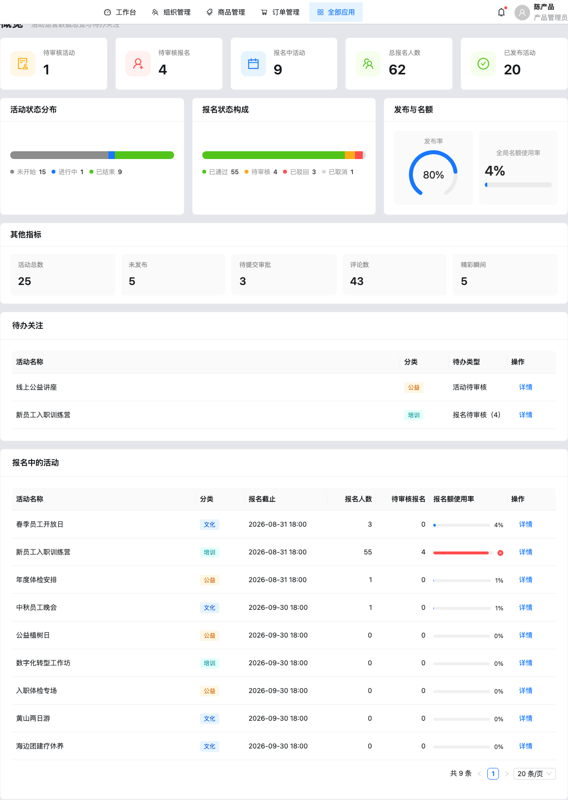
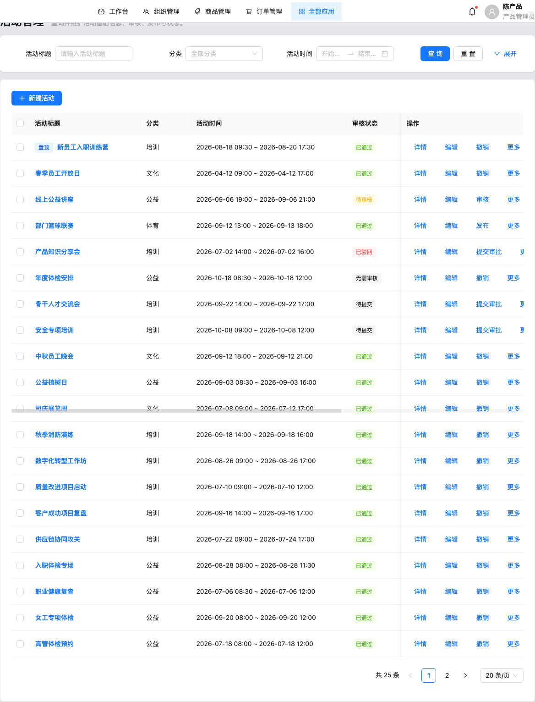
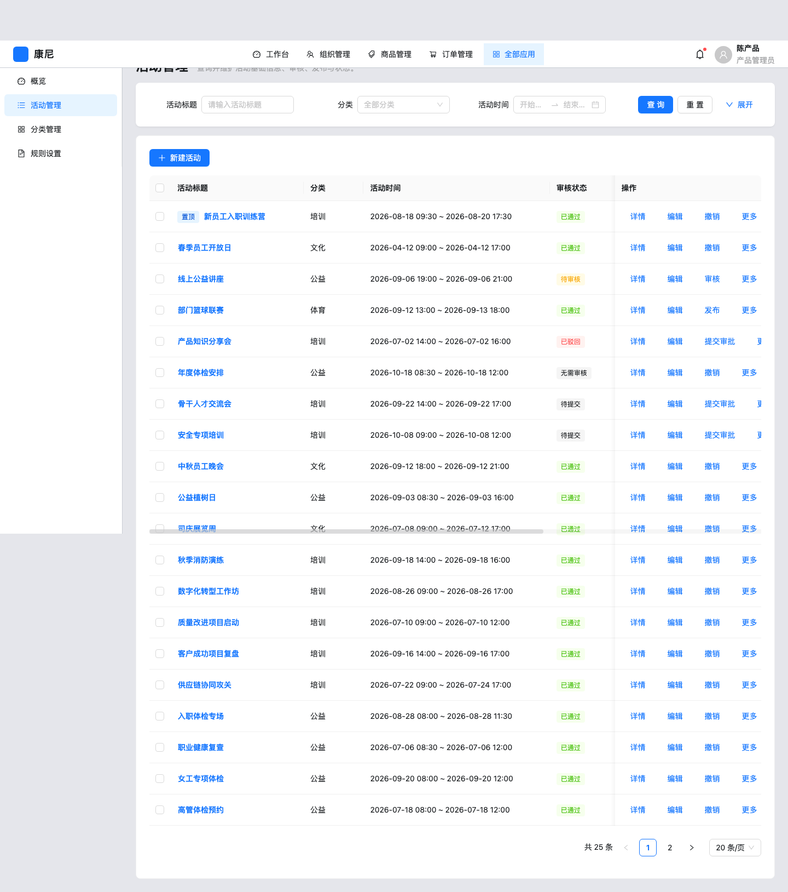
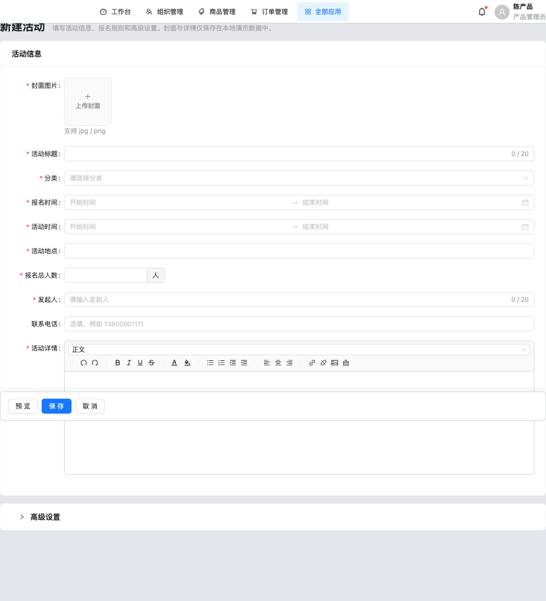
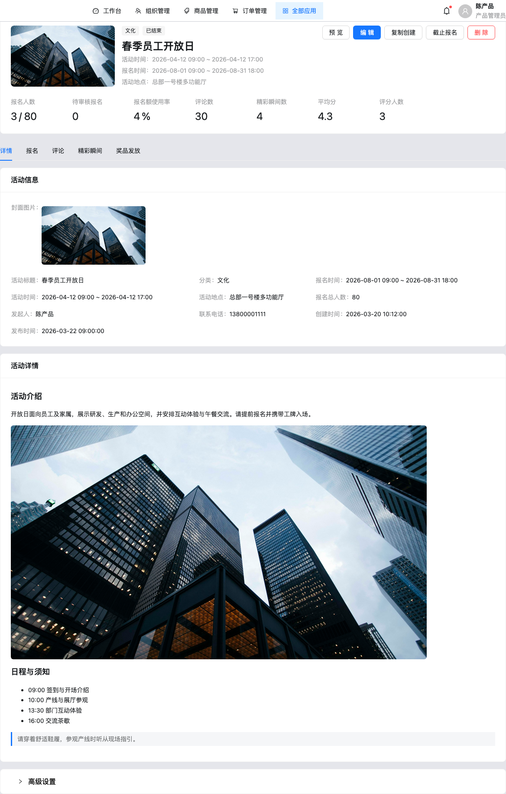
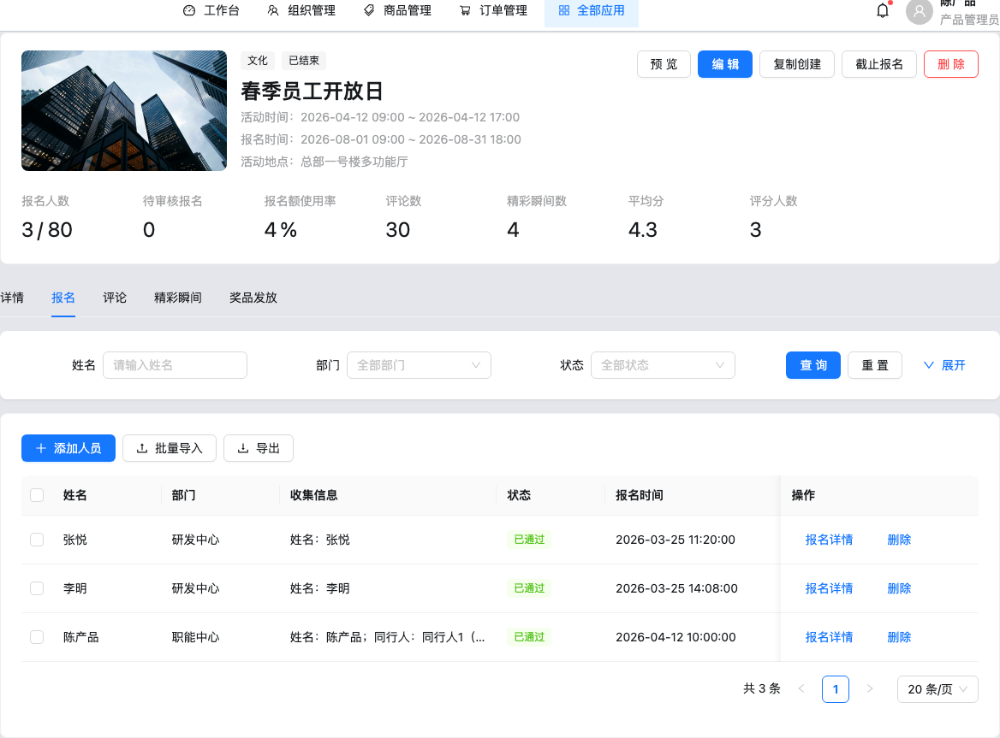
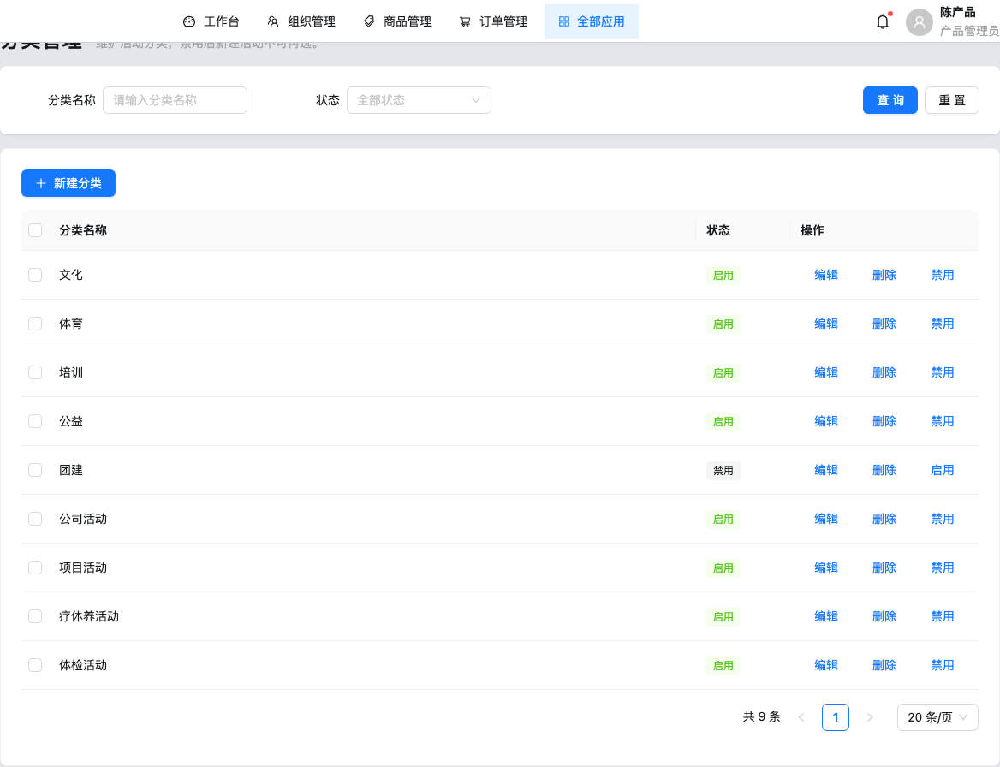
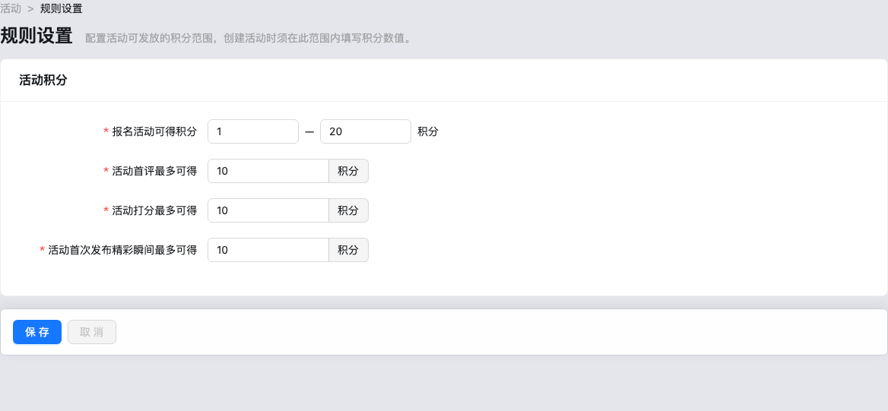

活动管理后台 产品需求文档
1. 文档说明
- 文档来源：基于康尼管理后台 React/TSX 原型反向分析（html-to-prd）
- 分析范围：应用「活动」(
activities)：概览、活动管理、新建/编辑、详情（含报名等 Tab）、分类管理、规则设置 - 生成日期：2026-08-24
- 可信度：界面与交互以源码为准（代码已实现）；无后端/权限处标 待确认
- 组件命名：
页面-模块-组件名称
2. 产品概述
产品定位：企业员工活动运营后台，覆盖活动创建、审批发布、报名审核、评论/瞬间/奖品运营与积分规则。
目标用户：活动运营 / 审批人（代码审核人常量 activityReviewer='苏然'）。角色分权 待确认。
核心场景：建活动→（可选）提交审批→发布→管理报名/评论/瞬间/奖品；配置积分规则与活动分类。
3. 页面结构 / 信息架构
- 侧栏：概览 / 活动管理 / 分类管理 / 规则设置
- Hash：
#/activities/activity-overview|activity-list|activity-categories|activity-rules - 隐藏页：
activity-create、activity-edit/:id、activity-detail/:id/:tab? - 详情 Tab：detail / signups / comments / moments / prizes
4. 已实现功能清单
| 模块 | 功能点 | 说明 | 状态 |
|---|---|---|---|
| 概览 | KPI/图表/待办表 | 待审活动/报名、发布率、关注列表 | 代码已实现 |
| 活动列表 | 筛选/批量/行操作 | 提交审批、审核、发布/撤销、置顶、分类批量 | 代码已实现 |
| 活动表单 | 创建/编辑/复制 | 封面、时间、可见范围、报名设置、积分、报名字段 | 代码已实现 |
| 活动详情 | 五 Tab | 详情/报名/评论/瞬间/奖品 + 头区审批发布 | 代码已实现 |
| 分类/规则 | CRUD + 积分上下限 | 分类启用禁用；活动积分规则 | 代码已实现 |
5. 用户流程
- 活动管理 → 新建 → 填表保存（默认 auditStatus 常为无需审核）→ 列表草稿/未发布
- 若开启活动审批：提交审批 → 审核通过 → 发布
- 发布后员工端可见（文案）；可撤销、截止报名、管理报名审核
6. 页面级需求说明
6.1 概览

KPI：待审核活动、待审核报名、报名中活动、总报名人数、已发布。图表：状态分布、报名构成、发布率。待办关注表可跳详情（报名待审带 tab=signups）。
6.2 活动管理


筛：标题/分类/活动时间/审核状态/生命周期/创建与发布时间。行操作：详情、编辑、提交审批|审核|发布|撤销、置顶。批量：提交审批/发布/撤销/设分类。
6.3 新增活动

必填：封面、标题(≤20)、分类、报名时段、活动时段、地点、报名总名额、组织人、详情。高级：可见范围、报名审批流、瞬间审核、活动积分、报名字段编辑器。保存会清空 itinerary/extraFeeRule/tags。
6.4 活动详情


头区：审核/提交审批/预览/编辑/复制/截止报名/删除。统计条含报名使用率、评论、瞬间、评分。报名 Tab 管理报名审核状态。
6.5 分类管理 / 规则设置


分类：名称≤10、启用/禁用、占用不可删。规则：报名积分区间、首评/评分/瞬间积分上限。
7. 数据字段与枚举
| 枚举 | 取值 |
|---|---|
| auditStatuses | 待提交 / 待审核 / 已通过 / 已驳回 / 无需审核 |
| publishStatuses | 未发布 / 已发布 |
| activityStatuses / lifecycle | 未开始/进行中/已结束；展示含未发布 |
| visibilityOptions | 全员 / 按部门 / 自定义人群 / 导入人群 |
| signupStatuses | 待审核 / 已通过 / 已驳回 / 已取消 |
| activityTypes | 公司/疗休养/体检/项目（表单不暴露，保存默认或继承） |
8. API / 数据接口清单
无 HTTP。内存 activityStore / categoryStore / activityPointRulesStore。无 localStorage，刷新丢变更。
建议接口：活动 CRUD、审批流、报名审核、文件上传、人群导入解析。
9. 非功能需求
- 窄屏列表布局自适应（代码有 breakpoint）。
- 危险操作确认弹窗（删除/撤销等）。
- 审计日志、权限、并发 待确认。
10. 埋点与指标建议
建议补充
| 事件 | 触发 | 目的 |
|---|---|---|
| activity_publish | 发布 | 发布转化 |
| activity_approve | 审核通过 | 审批时效 |
| signup_review | 报名通过/驳回 | 运营效率 |
11. 验收标准
- Given 可发布条件（已通过/无需审核），When 发布，Then publishStatus=已发布。
- Given 分类被活动引用，When 删除分类，Then 拦截。
- Given 报名 Tab 有待审，When 通过，Then 状态变为已通过。
12. 风险与待确认问题
- 无持久化；导入人群只存文件名不解析。
activityApprovalEnabled文案与活动审核门禁共用，易混。- 表单不维护 type/tags/itinerary；疗休养扩展字段保存被清空。
- 概览 KPI 跳转列表不带筛选条件。